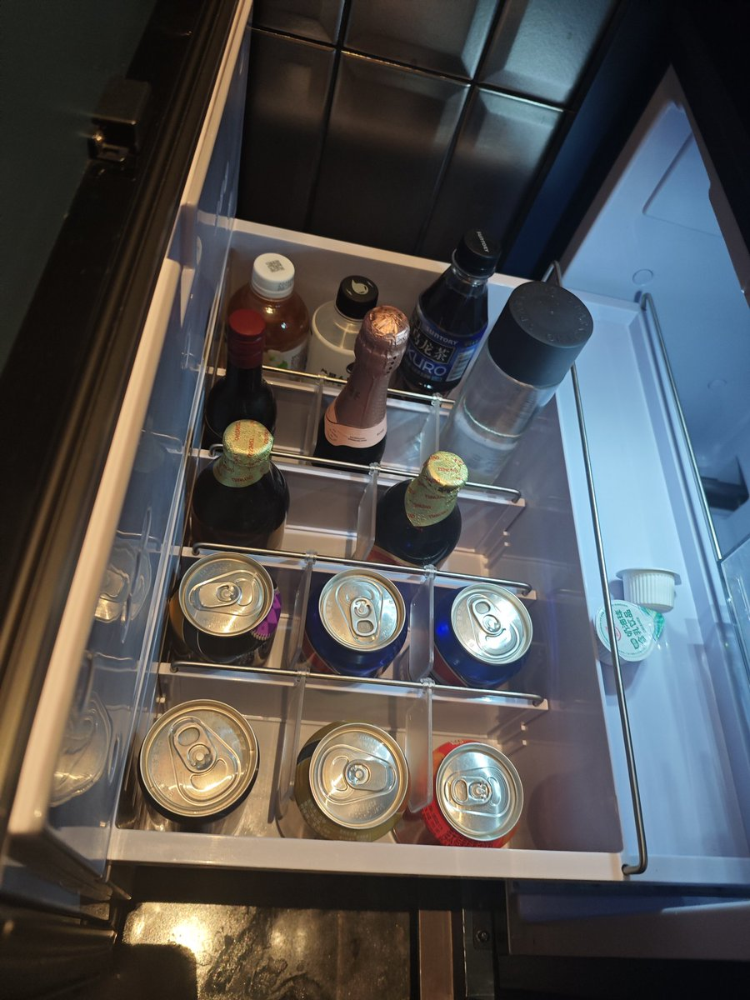

🥺
@YuKi520OwO
@Hanachanwa1 可以看看有没有w或者丽思卡尔顿，住起来很舒服还有行政酒廊 景观房 泳池。w还给你提供很多饮品酒品食品情趣用品。

小花酱🏳️⚧️はなちゃんは〜
@Hanachanwa1
武汉有什么超级豪华必住的酒店吗？想去武汉度假……呜呜呜呜、自从上次去澳门圆角、住了澳门的豪华酒店之后、就感觉内地的豪华酒店都千篇一律、好无聊、估计好长一段时间无法超越了……（对了、武汉也可以接圆角、并且可以按工时计费！武汉专属门槛、支付宝口令红包68！）